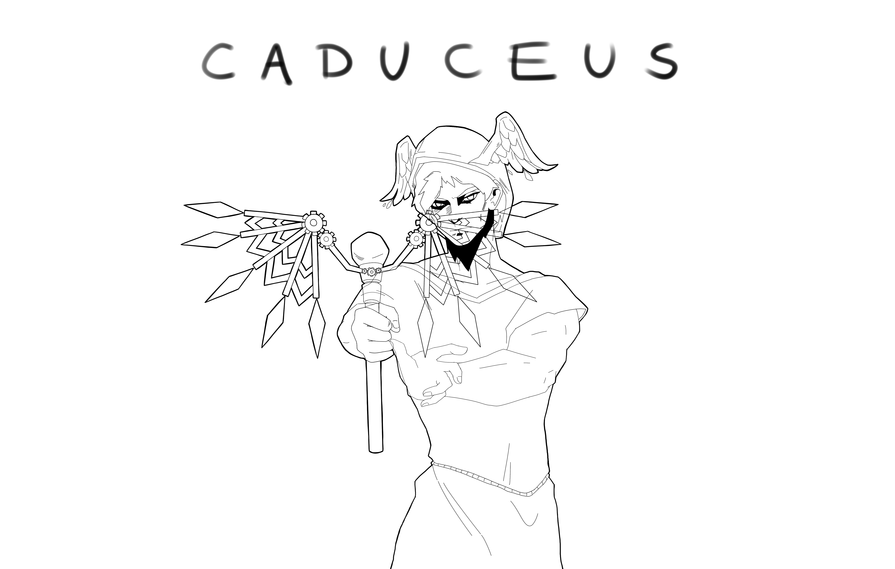
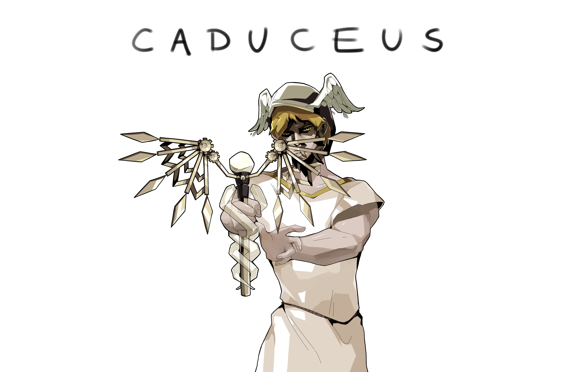
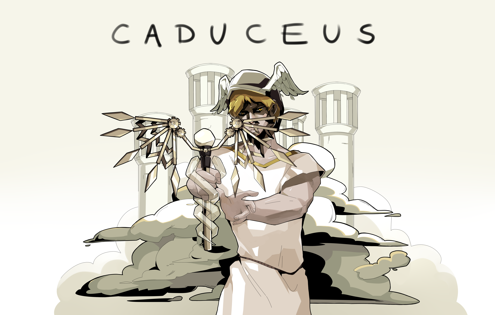
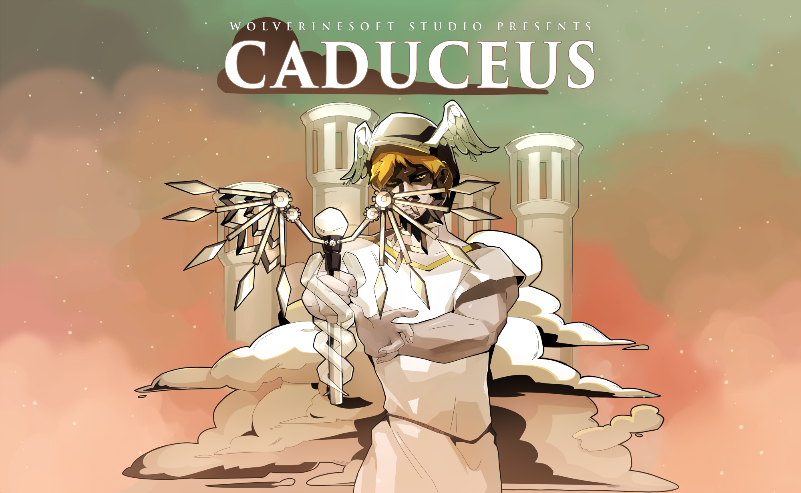

The final push! This past sprint, I've done a lot more hands-on work than usual in order to make up for member absence. Now that development has officially come to a close, I feel a lot more comfortable discussing my thoughts on the project as a whole, as well as what can be done in the future.
Studio-wide & Leads Meetings
The leads meetings this sprint became shorter as our goals became more clear. We followed the fairly straightforward format of playtesting off of development, discussing the state of the game, identifying tasks, and discussing any last minute topics at the end. I plan on scheduling a post-mortem with the leads within the next few weeks (but after the semester ends).
Preparing for the final studio-wide meeting was slightly more work intensive than other meetings. I created a member feedback form, finalized the summer studio application, and recorded the final "progress" video. As per usual, it can be seen before.
It was a little unfortunate to capture bugs and clearly unfinished work in the final progress video, but it is what it is. Although I've only ever recorded progress videos for Circuitry and Project Cloud, the stark difference between the final videos for both games is telling. Somehow, Project Cloud fell uniquely behind this semester. I have a few thoughts on why that may be, but I will save those for later.
Cover Art
I sinked at least 20 hours into working on the cover art this sprint. Not an exaggeration. It took so long because (1), I was trying a new Hades-esque style that was VERY far out of my comfort zone, and (2), I wanted to make a really good first impression with the cover art. It took a lot of disappointment, but I ended up with something I'm really proud of. Take a look at the progress below:
(above) This was the state of the cover art a little after the progress picture I gave last week. I experimented a lot with pen pressure in the lineart. If we examine the Hades cover art, we see a lot of thick, black shadows throughout. I wanted to imitate that intense look, so I added similar shadows to Hermes.
(above) This is what Hermes looked like after being colored. Coloring took a LONG, especially on the Caduceus itself. Getting a metallic look is very challenging. It was a lot of throwing down contrasted dark and light colors and hoping they looked shiny and nice together.

(above) This is what the background was GOING to look like. Not gonna lie, it took me a very, very long time to come up with a suitable background. A problem I frequently run into is rushing into an art piece without considering the background, which also messes up my ability to do nice lighting. The shading on the background stood out far too much compared to the shading on Hermes, which made this particular iteration of the environment very weak, in my opinion.
(above) After much deliberation, I settled on a more cell-shaded background. This didn't clash as much with Hermes, but it looked very dull and lifeless due to the lack of color. And our game is definitely not dull and lifeless. So while this was a step in the right direction, it still felt very incomplete.

So, I elected to add in a splash of pink-blue color to the sky, similar to the skybox we actually see in-game. I had to use the curves tool in Adobe Photoshop quite a few times on various elements in the background to get the colors cohesive.
A few minor adjustments later, adding some more polish and contrast to a few places, and adding a title to the image, we get the final product! I created several different resolutions for members to use on their portfolios, all of which can be viewed here.
Itch Page
Along the same lines as the cover art, I spent quite a while getting the itch page to look good. This involved separating the background of the cover art for the background art of the itch page, creating several new "header" images for the body of the itch page, and recording a ton of gifs of gameplay. I'm very happy with how the results turned out - in fact, I'd even say that this is my favorite itch page I've designed! The itch page may be viewed here.
I did almost create a quick trailer for Caduceus, but I unfortunately had several looming deadlines from other classes that I needed to take care of. I may go back and create one for the future. In the mean time, I've submitted Caduceus, Circuitry, Bloom, and Desolation Place to the SGDA 2021 Summit. I'm looking forward to hearing which entries (if any) have been accepted!
Other
I also spent quite a bit of time scaling the player HUD with the Unity canvas system, but unfortunately another programmer made changes at the same time, and we ended up with a merge conflict. The resolution of the merge conflict essentially overwrote all my work, which was a big bummer. As a result, the player HUD in the final game doesn't quite scale properly (though it does look very nice now).
I was also able to schedule a call with Brian Mitchell from Unreal, a member of the Epic Games internship team. We discussed the possibility of him giving a talk at the start of the group Unreal learning session to get everyone hyped up. I also mentioned the possiblility of a 494-WolverineSoft-ARI midwest game development summit at the end of Fall 2021, and he mentioned that Unreal recruiters may be interested in attending and potentially offering internships to students. Nothing definitive, but I'll definitely be keeping in touch with him.
In addition, I scheduled a ~2 hour talk with the studio directors to discuss the summer project. There, we solidified timelines, membership selection, and a few other details. We'll be meeting again soon to talk team size. The Unreal group learning materials will be mostly finished by early May, and preproduction for the summer project will begin on May 23rd. Applications for both the Summer and Fall 2021 have finally been released.
Retrospective
It's a little difficult to talk about Caduceus, largely because of burnout. The studio took such an unusually tremendous amount of time for me this time around compared to previous runs that it's felt really tiring to encounter setbacks through development. If I could name just a few things that I believe have made this semester of the studio uniquely difficult, it would be the following:
- Overly ambitious project. I should have been much more skeptical when the idea of Project Cloud was introduced. This, of course, isn't to say that the project plan wasn't super cool and nicely designed. It was my role to notice that certain intended features, such as a skill tree, procedural generation, etc. would've taken up a huge amount of time without adding much to the project, but I was too easily persuaded into thinking our team could take on the challenge. As a "veteran" lead, it fell on me and no one else to realize this. This is definitely a rough lesson that I will keep in mind for the future.
- Lack of coordination with industry advisors. Because I wasn't necessarily "next in line" as studio director when I came into the position, and had to take up the role rather suddenly, I think I missed out on a lot of valuable mentorship (which is no one's fault, just an unfortunate situation). As a result, I had NO idea how frequently that our past leads communicated with industry mentors, and I was never really introduced to any of our previous mentors. I thus did not set up meetings with any industry advisors early on, which meant we missed out on valuable insight. If we had their help, they might have noticed the flaws in our project scope much earlier than we did. In the future, I'll absolutely be coordinating with them more.
- Lack of "true" Agile. I don't think we've ever been able to perfectly approximate an Agile workflow before, but this semester in particular was much more similar to Waterfall than anything. In any case, we should have had a complete game loop by the second sprint at the latest. Instead, a huge amount of feature creep resulted in us not having a complete game loop until near the final weeks of development, which was highly detrimental to morale and playtesting as a whole.